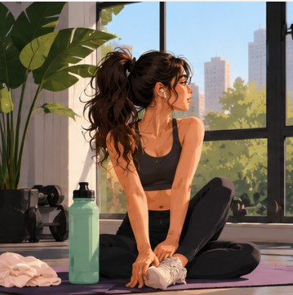

A day in four chapters
Your Day,
In Motion
Scroll slowly. The sun keeps time.
22:00 · Same sun, new day
01 — Wake
Let the light arrive first.
Before the inbox and before the news, there are a few minutes where the room just gets brighter. Stay in them a little longer.
02 — Move
Get the body going.
A walk round the block, a stretch, the long way to the coffee. Momentum is easier to keep than to find.
03 — Focus
Narrow the world.
One task, one window, one hour. Everything else can wait at the edge of the screen.
04 — Reset
Bring the pieces back together.
The light goes soft and everything you carried today settles into place. Tomorrow starts from here.